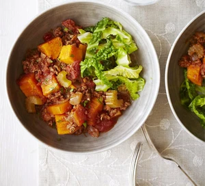

Beef Stew Recipe
Home Page
Chilli Con Carne Recipe
Bolognese Recipe

This recipe looks at how we are going to create a Beef Stew . It requires 20 minutes of preparation and 60 minutes of cooking.
Ingredients
- 1 tbsp Sunflower Oil
- 1 Large Onion
- 1 Large Onion
- 1 Celery Stick
- 500g Lean Beef Mince
- 1 tbsp Tomato Puree
- 1 tbsp Mushroom Ketchup
- 400g Can Chopped Tomatoes
- 450g Sweet Potato
- Few Thyme Sprigs
- 1 Bay Leaf
- Hanful of Parsley
- Savoy Cabbage
Steps
- Heat the oil in a large pan, add the onion, carrot and celery, and sweat for 10 mins until soft. Add the beef and cook until it is browned all over.
- Add the tomato purée and cook for a few mins, then add the mushroom ketchup, tomatoes, sweet potatoes, herbs and a can full of water. Season well and bring to the boil.
- Simmer on a low heat for 40-45 mins until the sweet potatoes are tender, stirring a few times throughout cooking to make sure they are cooking evenly.
- Once cooked, remove the bay leaf, stir through the chopped parsley and serve with cabbage.